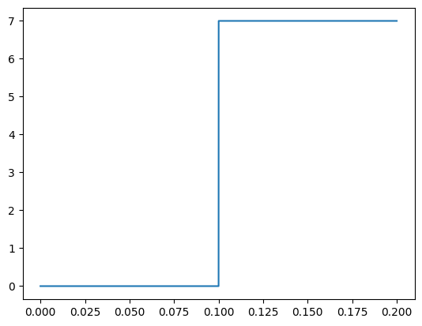
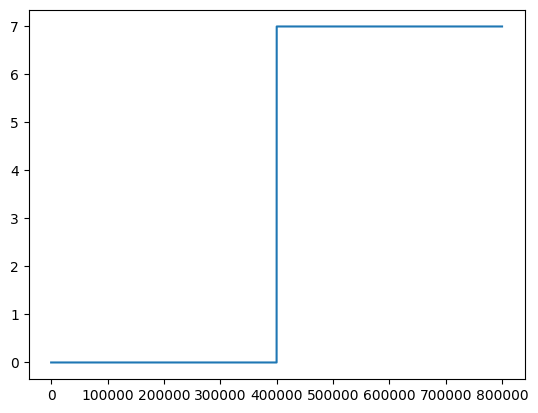

Automated Domain Writing: Grid Pulsing with Cypher Image#
\(_{Yongtao}\) \(_{Liu,}\) \(_{liuy3@ornl.gov,}\) \(_{youngtaoliu@gmail.com}\)
\(_{July}\) \(_{2026}\)
Import#
import numpy as np
import matplotlib.pyplot as plt
import time
from aecroscopywave.wavebuilding import WaveGenerator
from aecroscopywave.interfaces import WaveVI, Cypher
Initialize Experiment#
Initialize an instance of PyCypher#
pycy = Cypher.PyCypher()
# Test executing Igor Pro commands; you should see messages in Igor Pro's command window
pycy.igor.Execute("Print \"Igor Execute: Hello from Igor Pro!\"")
pycy.Execute("Print \"Execute: Hello from Igor Pro!\"")
'DONE--ExecutePrint "Execute: Hello from Igor Pro!"'
Initialize an instance of PyWaveVI#
_path = r'C:\Users\\PyScanner_FPGA_6124_01\PyScanner_FPGA_6124_01.exe'
pyvi = WaveVI.PyWaveVI(vi_path = _path)
# Set DAQ settings for PyWaveVI. It takes the default settings in LabView if no argument is provided
pyvi.set_IO_settings(IO_setting_dict ={"trigger_type": 0, "AO_amplifier": 0, "IO_timeout": 5, "AI_ch01": 1, "AI_ch02": 1, "AI_ch03": 1})
'DONE--set_IO_settings'
Set a wave#
t, backswitchwave = WaveGenerator.square_pulse(amplitude = 7, pulse_duration = [0.1, 0.1, 0])
plt.plot(t, backswitchwave)
[<matplotlib.lines.Line2D at 0x26e76428650>]

Upload wave to VI#
pyvi.set_AO_waveforms(waveform=backswitchwave, zero_tail=False)
'DONE--set_AO_waveforms'
Check uploaded wave#
uploadedwave = pyvi.get_AO_waveforms()
plt.plot(uploadedwave)
[<matplotlib.lines.Line2D at 0x26e711da060>]

Execute wave#
pyvi.set_IO_control(clear = True, upload = True, do_IO = True, fetch_result = False)
'DONE--set_IO_control'
Set zero wave#
_, setzero = WaveGenerator.square_pulse(amplitude = 0, pulse_duration = [0.1, 0.1, 0.1])
pyvi.set_AO_waveforms(waveform=setzero, zero_tail=False)
pyvi.set_IO_control(clear = True, upload = True, do_IO = True, fetch_result = False)
'DONE--set_IO_control'
Move tip#
# Initialize tip movement
pycy.initialize_move_tip()
'DONE--initialize move tip'
# Move tip
pycy.move_tip(coordinates = [255, 255], coordinates_type="pixel", transit_time = 0.5)
'DONE--move tip'
Grid Pulsing#
Set grid locations#
# All locations span across [start_point_x, end_point_x] in x-direction and [start_point_y, end_point_y] in y-direction.
# There are num_x rows and num_y columns in the locations array
start_point_x = 0 # Define location array parameters
end_point_x = 255
start_point_y = 0
end_point_y = 255
num_x = 11
num_y = 11
# Generate location array
pos_x = np.linspace(start_point_x, end_point_x, num_x, dtype = int)
pos_y = np.linspace(start_point_y, end_point_y, num_y, dtype = int)
pulse_pos = np.meshgrid(pos_x, pos_y)
pulse_pos_x = pulse_pos[0].reshape(-1)
pulse_pos_y = pulse_pos[1].reshape(-1) # pulse_pos_x and pulse_pos_y are the coordinates of all locations
Set pulse parameters#
# Pulse
start_pulse_v = -3 # Define location array parameters
end_pulse_v = -9
start_pulse_d = 0.05
end_pulse_d = 1.0
# Generate location array
pulse_v = np.linspace(start_pulse_v, end_pulse_v, num_x, dtype = float)
pulse_d = np.linspace(start_pulse_d, end_pulse_d, num_y, dtype = float)
pulse = np.meshgrid(pulse_v, pulse_d)
pulse_v = pulse[0].reshape(-1)
pulse_d = pulse[1].reshape(-1) # pulse_pos_x and pulse_pos_y are the coordinates of all locations
print (pulse_v)
print(pulse_d)
[-3. -3.6 -4.2 -4.8 -5.4 -6. -6.6 -7.2 -7.8 -8.4 -9. -3. -3.6 -4.2
-4.8 -5.4 -6. -6.6 -7.2 -7.8 -8.4 -9. -3. -3.6 -4.2 -4.8 -5.4 -6.
-6.6 -7.2 -7.8 -8.4 -9. -3. -3.6 -4.2 -4.8 -5.4 -6. -6.6 -7.2 -7.8
-8.4 -9. -3. -3.6 -4.2 -4.8 -5.4 -6. -6.6 -7.2 -7.8 -8.4 -9. -3.
-3.6 -4.2 -4.8 -5.4 -6. -6.6 -7.2 -7.8 -8.4 -9. -3. -3.6 -4.2 -4.8
-5.4 -6. -6.6 -7.2 -7.8 -8.4 -9. -3. -3.6 -4.2 -4.8 -5.4 -6. -6.6
-7.2 -7.8 -8.4 -9. -3. -3.6 -4.2 -4.8 -5.4 -6. -6.6 -7.2 -7.8 -8.4
-9. -3. -3.6 -4.2 -4.8 -5.4 -6. -6.6 -7.2 -7.8 -8.4 -9. -3. -3.6
-4.2 -4.8 -5.4 -6. -6.6 -7.2 -7.8 -8.4 -9. ]
[0.05 0.05 0.05 0.05 0.05 0.05 0.05 0.05 0.05 0.05 0.05 0.145
0.145 0.145 0.145 0.145 0.145 0.145 0.145 0.145 0.145 0.145 0.24 0.24
0.24 0.24 0.24 0.24 0.24 0.24 0.24 0.24 0.24 0.335 0.335 0.335
0.335 0.335 0.335 0.335 0.335 0.335 0.335 0.335 0.43 0.43 0.43 0.43
0.43 0.43 0.43 0.43 0.43 0.43 0.43 0.525 0.525 0.525 0.525 0.525
0.525 0.525 0.525 0.525 0.525 0.525 0.62 0.62 0.62 0.62 0.62 0.62
0.62 0.62 0.62 0.62 0.62 0.715 0.715 0.715 0.715 0.715 0.715 0.715
0.715 0.715 0.715 0.715 0.81 0.81 0.81 0.81 0.81 0.81 0.81 0.81
0.81 0.81 0.81 0.905 0.905 0.905 0.905 0.905 0.905 0.905 0.905 0.905
0.905 0.905 1. 1. 1. 1. 1. 1. 1. 1. 1. 1.
1. ]
Convert pixel coordinates to voltages#
pulse_pos_voltages = [] # Convert pixel coordinates to piezo voltages
for i in range(len(pulse_pos_x)):
pulse_pos_voltages.append(pycy.pixel_to_voltage(pixel_coordinates=[pulse_pos_x[i], pulse_pos_y[i]]))
pulse_pos_voltages
[(np.float64(-0.2569998104894111), np.float64(-1.6403928187319488)),
(np.float64(-0.16410246298737452), np.float64(-1.6403928187319488)),
(np.float64(-0.06748922158525605), np.float64(-1.6403928187319488)),
(np.float64(0.025408125916780655), np.float64(-1.6403928187319488)),
(np.float64(0.12202136731889895), np.float64(-1.6403928187319488)),
(np.float64(0.21491871482093566), np.float64(-1.6403928187319488)),
(np.float64(0.31153195622305385), np.float64(-1.6403928187319488)),
(np.float64(0.4044293037250906), np.float64(-1.6403928187319488)),
(np.float64(0.5010425451272089), np.float64(-1.6403928187319488)),
(np.float64(0.5939398926292457), np.float64(-1.6403928187319488)),
(np.float64(0.690553134031364), np.float64(-1.6403928187319488)),
(np.float64(-0.2569998104894111), np.float64(-1.5505021886615555)),
(np.float64(-0.16410246298737452), np.float64(-1.5505021886615555)),
(np.float64(-0.06748922158525605), np.float64(-1.5505021886615555)),
(np.float64(0.025408125916780655), np.float64(-1.5505021886615555)),
(np.float64(0.12202136731889895), np.float64(-1.5505021886615555)),
(np.float64(0.21491871482093566), np.float64(-1.5505021886615555)),
(np.float64(0.31153195622305385), np.float64(-1.5505021886615555)),
(np.float64(0.4044293037250906), np.float64(-1.5505021886615555)),
(np.float64(0.5010425451272089), np.float64(-1.5505021886615555)),
(np.float64(0.5939398926292457), np.float64(-1.5505021886615555)),
(np.float64(0.690553134031364), np.float64(-1.5505021886615555)),
(np.float64(-0.2569998104894111), np.float64(-1.4570159333883463)),
(np.float64(-0.16410246298737452), np.float64(-1.4570159333883463)),
(np.float64(-0.06748922158525605), np.float64(-1.4570159333883463)),
(np.float64(0.025408125916780655), np.float64(-1.4570159333883463)),
(np.float64(0.12202136731889895), np.float64(-1.4570159333883463)),
(np.float64(0.21491871482093566), np.float64(-1.4570159333883463)),
(np.float64(0.31153195622305385), np.float64(-1.4570159333883463)),
(np.float64(0.4044293037250906), np.float64(-1.4570159333883463)),
(np.float64(0.5010425451272089), np.float64(-1.4570159333883463)),
(np.float64(0.5939398926292457), np.float64(-1.4570159333883463)),
(np.float64(0.690553134031364), np.float64(-1.4570159333883463)),
(np.float64(-0.2569998104894111), np.float64(-1.3671253033179531)),
(np.float64(-0.16410246298737452), np.float64(-1.3671253033179531)),
(np.float64(-0.06748922158525605), np.float64(-1.3671253033179531)),
(np.float64(0.025408125916780655), np.float64(-1.3671253033179531)),
(np.float64(0.12202136731889895), np.float64(-1.3671253033179531)),
(np.float64(0.21491871482093566), np.float64(-1.3671253033179531)),
(np.float64(0.31153195622305385), np.float64(-1.3671253033179531)),
(np.float64(0.4044293037250906), np.float64(-1.3671253033179531)),
(np.float64(0.5010425451272089), np.float64(-1.3671253033179531)),
(np.float64(0.5939398926292457), np.float64(-1.3671253033179531)),
(np.float64(0.690553134031364), np.float64(-1.3671253033179531)),
(np.float64(-0.2569998104894111), np.float64(-1.273639048044744)),
(np.float64(-0.16410246298737452), np.float64(-1.273639048044744)),
(np.float64(-0.06748922158525605), np.float64(-1.273639048044744)),
(np.float64(0.025408125916780655), np.float64(-1.273639048044744)),
(np.float64(0.12202136731889895), np.float64(-1.273639048044744)),
(np.float64(0.21491871482093566), np.float64(-1.273639048044744)),
(np.float64(0.31153195622305385), np.float64(-1.273639048044744)),
(np.float64(0.4044293037250906), np.float64(-1.273639048044744)),
(np.float64(0.5010425451272089), np.float64(-1.273639048044744)),
(np.float64(0.5939398926292457), np.float64(-1.273639048044744)),
(np.float64(0.690553134031364), np.float64(-1.273639048044744)),
(np.float64(-0.2569998104894111), np.float64(-1.1837484179743505)),
(np.float64(-0.16410246298737452), np.float64(-1.1837484179743505)),
(np.float64(-0.06748922158525605), np.float64(-1.1837484179743505)),
(np.float64(0.025408125916780655), np.float64(-1.1837484179743505)),
(np.float64(0.12202136731889895), np.float64(-1.1837484179743505)),
(np.float64(0.21491871482093566), np.float64(-1.1837484179743505)),
(np.float64(0.31153195622305385), np.float64(-1.1837484179743505)),
(np.float64(0.4044293037250906), np.float64(-1.1837484179743505)),
(np.float64(0.5010425451272089), np.float64(-1.1837484179743505)),
(np.float64(0.5939398926292457), np.float64(-1.1837484179743505)),
(np.float64(0.690553134031364), np.float64(-1.1837484179743505)),
(np.float64(-0.2569998104894111), np.float64(-1.0902621627011415)),
(np.float64(-0.16410246298737452), np.float64(-1.0902621627011415)),
(np.float64(-0.06748922158525605), np.float64(-1.0902621627011415)),
(np.float64(0.025408125916780655), np.float64(-1.0902621627011415)),
(np.float64(0.12202136731889895), np.float64(-1.0902621627011415)),
(np.float64(0.21491871482093566), np.float64(-1.0902621627011415)),
(np.float64(0.31153195622305385), np.float64(-1.0902621627011415)),
(np.float64(0.4044293037250906), np.float64(-1.0902621627011415)),
(np.float64(0.5010425451272089), np.float64(-1.0902621627011415)),
(np.float64(0.5939398926292457), np.float64(-1.0902621627011415)),
(np.float64(0.690553134031364), np.float64(-1.0902621627011415)),
(np.float64(-0.2569998104894111), np.float64(-1.0003715326307483)),
(np.float64(-0.16410246298737452), np.float64(-1.0003715326307483)),
(np.float64(-0.06748922158525605), np.float64(-1.0003715326307483)),
(np.float64(0.025408125916780655), np.float64(-1.0003715326307483)),
(np.float64(0.12202136731889895), np.float64(-1.0003715326307483)),
(np.float64(0.21491871482093566), np.float64(-1.0003715326307483)),
(np.float64(0.31153195622305385), np.float64(-1.0003715326307483)),
(np.float64(0.4044293037250906), np.float64(-1.0003715326307483)),
(np.float64(0.5010425451272089), np.float64(-1.0003715326307483)),
(np.float64(0.5939398926292457), np.float64(-1.0003715326307483)),
(np.float64(0.690553134031364), np.float64(-1.0003715326307483)),
(np.float64(-0.2569998104894111), np.float64(-0.9068852773575391)),
(np.float64(-0.16410246298737452), np.float64(-0.9068852773575391)),
(np.float64(-0.06748922158525605), np.float64(-0.9068852773575391)),
(np.float64(0.025408125916780655), np.float64(-0.9068852773575391)),
(np.float64(0.12202136731889895), np.float64(-0.9068852773575391)),
(np.float64(0.21491871482093566), np.float64(-0.9068852773575391)),
(np.float64(0.31153195622305385), np.float64(-0.9068852773575391)),
(np.float64(0.4044293037250906), np.float64(-0.9068852773575391)),
(np.float64(0.5010425451272089), np.float64(-0.9068852773575391)),
(np.float64(0.5939398926292457), np.float64(-0.9068852773575391)),
(np.float64(0.690553134031364), np.float64(-0.9068852773575391)),
(np.float64(-0.2569998104894111), np.float64(-0.8169946472871457)),
(np.float64(-0.16410246298737452), np.float64(-0.8169946472871457)),
(np.float64(-0.06748922158525605), np.float64(-0.8169946472871457)),
(np.float64(0.025408125916780655), np.float64(-0.8169946472871457)),
(np.float64(0.12202136731889895), np.float64(-0.8169946472871457)),
(np.float64(0.21491871482093566), np.float64(-0.8169946472871457)),
(np.float64(0.31153195622305385), np.float64(-0.8169946472871457)),
(np.float64(0.4044293037250906), np.float64(-0.8169946472871457)),
(np.float64(0.5010425451272089), np.float64(-0.8169946472871457)),
(np.float64(0.5939398926292457), np.float64(-0.8169946472871457)),
(np.float64(0.690553134031364), np.float64(-0.8169946472871457)),
(np.float64(-0.2569998104894111), np.float64(-0.7235083920139367)),
(np.float64(-0.16410246298737452), np.float64(-0.7235083920139367)),
(np.float64(-0.06748922158525605), np.float64(-0.7235083920139367)),
(np.float64(0.025408125916780655), np.float64(-0.7235083920139367)),
(np.float64(0.12202136731889895), np.float64(-0.7235083920139367)),
(np.float64(0.21491871482093566), np.float64(-0.7235083920139367)),
(np.float64(0.31153195622305385), np.float64(-0.7235083920139367)),
(np.float64(0.4044293037250906), np.float64(-0.7235083920139367)),
(np.float64(0.5010425451272089), np.float64(-0.7235083920139367)),
(np.float64(0.5939398926292457), np.float64(-0.7235083920139367)),
(np.float64(0.690553134031364), np.float64(-0.7235083920139367))]
Generate grid points#
from typing import Tuple
def generate_grid_points(
center_offset: Tuple[float, float],
img_size: float,
grid_shape: Tuple[int, int] = (10, 10),
margin: float = 0.0001
) -> np.ndarray:
"""
Generate a uniform grid of points within the current image area.
Parameters
----------
center_offset : Tuple[float, float]
(x, y) offset of the image center in voltage units.
img_size : float
Side length of the square image area in voltage units.
grid_shape : Tuple[int, int], optional
Number of grid points as (rows, cols). Default is (10, 10).
margin : float, optional
Fractional margin to inset from image edges (0.0 = edge-to-edge,
0.1 = 10% inset on each side). Default is 0.0.
Returns
-------
np.ndarray, shape (N, 2)
Array of (x, y) voltage coordinates for each grid point,
ordered row by row (left-to-right, bottom-to-top).
Examples
--------
>>> pts = generate_grid_points(center_offset=(1.0, -0.5), img_size=2.0)
>>> pts.shape
(100, 2)
"""
cx, cy = center_offset
half = (img_size / 2) * (1.0 - margin)
x_coords = np.linspace(cx - half, cx + half, grid_shape[0])
y_coords = np.linspace(cy - half, cy + half, grid_shape[1])
xx, yy = np.meshgrid(x_coords, y_coords)
# Flatten to (N, 2) array of (x, y) pairs
grid_points = np.column_stack([xx.ravel(), yy.ravel()])
return grid_points
metadata = pycy.get_MasterVariables()
metadata
{'ScanSize': 4e-06,
'FastScanSize': 4e-06,
'SlowScanSize': 4e-06,
'ScanRate': 1.001602564102564,
'ScanSpeed': 1.0016025641025641e-05,
'XOffset': -1.533311e-06,
'YOffset': 7.874228900000001e-08,
'ScanPoints': 256.0,
'ScanLines': 256.0,
'RoundFactor': 0.04,
'IntegralGain': 30.0,
'ProportionalGain': 0.0,
'ScanAngle': 0.0,
'ScanAngleFactor': 1.0,
'AmplitudeSetpointVolts': 0.8,
'AmplitudeSetpointMeters': 1e-08,
'DriveAmplitude': 1.0,
'DriveFrequency': 49999.99888241291,
'SweepWidth': 200000.0,
'SlowScanEnabled': 1.0,
'DeflectionSetpointVolts': 1.0,
'DeflectionSetpointMeters': 0.0,
'DeflectionSetpointNewtons': 5e-09,
'ImagingMode': 3.0,
'MaxScanSize': 3e-05,
'InvOLS': 5.104461353927852e-07,
'SpringConstant': 1.0,
'DisplaySpringConstant': 1e-09,
'ScanStateChanged': 0.0,
'ScanDown': 0.0,
'XLVDTSens': 4.2214e-06,
'YLVDTSens': 4.3626e-06,
'ZLVDTSens': 2.45e-06,
'XLVDTOffset': 0.58,
'YLVDTOffset': -1.2,
'ZLVDTOffset': 0.0,
'YIgain': 4.84,
'YPgain': -inf,
'XIgain': 4.73,
'XPgain': -inf,
'LastScan': 2.0,
'XPiezoSens': -1.7437e-07,
'YPiezoSens': 1.8489e-07,
'ZPiezoSens': 3.0559e-08,
'XDriveOffset': 0.0,
'YDriveOffset': 0.0,
'SweepPoints': 480.0,
'SecretGain': 0.0,
'YSgain': 7.59,
'XSgain': 7.53,
'DIsplayLVDTTraces': 0.0,
'PhaseOffset': 0.0,
'BaseSuffix': 0.0,
'SaveImage': 2.0,
'ParmChange': 0.0,
'OldScanSize': nan,
'OldYOffset': 7.874228900000001e-08,
'OldXOffset': -1.533311e-06,
'ZIgain': 5.41,
'ZPgain': -inf,
'ZSgain': 0.0,
'AmpInvOLS': 1.595144173102454e-08,
'UpdateCounter': 106.0,
'DoMunge': 0.0,
'XMungeAlpha': 1.0,
'YMungeAlpha': 1.0,
'ZMungeAlpha': 1.0,
'StartHeadTemp': 1.3041665976984393,
'StartScannerTemp': -1.6667416569572848,
'DontChangeXPT': 1.0,
'LowNoise': 0.0,
'ScreenRatio': 0.75,
'XDriftRate': 0.0,
'YDriftRate': 0.0,
'XDriftTotal': 0.0,
'YDriftTotal': 0.0,
'DriftBIts': 0.0,
'DriftCount': 0.0,
'Setpoint': 0.0008,
'FastRatio': 1.0,
'SlowRatio': 1.0,
'TopLine': 255.0,
'BottomLine': 0.0,
'ScanStatus': 0.0,
'DelayUpdate': 1.0,
'MarkerRatio': 0.0,
'StartLineCount': 0.0,
'OldAmplitudeSetpointVolts': 0.8,
'OldDeflectionSetPointVolts': 0.0,
'ScanMode': 0.0,
'Interpolate': -1248.0,
'TipVoltage': 0.0,
'SurfaceVoltage': 0.0,
'FreqIgain': 5.0,
'FreqPgain': 0.0,
'FreqSgain': 0.0,
'OrcaGain': nan,
'FreqGainOn': 0.0,
'UserIn0Gain': 1.0,
'UserIn1Gain': 1.0,
'UserIn2Gain': 1.0,
'LateralGain': 1.0,
'FrequencyHack': 0.0,
'MagneticField': nan,
'DriveGainOn': 0.0,
'DriveIGain': 50.0,
'DrivePGain': 0.0,
'DriveSGain': 0.0,
'UserIn0Offset': 0.0,
'UserIn1Offset': 0.0,
'UserIn2Offset': 0.0,
'LateralOffset': 0.0,
'LastImage': 0.0,
'ZoomSize': 4e-06,
'ZoomXOffset': -1.5333109757516353e-06,
'ZoomYOffset': 7.874228949966113e-08,
'User0Voltage': 0.0,
'User1Voltage': 0.0,
'ExtendedZ': 0.0,
'DriveAmplitude1': 0.1,
'DriveFrequency1': 450000.0,
'SweepWidth1': 5000.0,
'PhaseOffset1': 0.0,
'Amp2InvOLS': 2e-08,
'VoltageParm': 0.0,
'MicroscopeID': 4.0,
'CapacitanceSens': 1.0,
'CapacitanceOffset': 0.0,
'CapPhaseOffset': 0.0,
'TipBiasOffset': 0.0,
'TipHeaterOffset': 0.0,
'SurfaceBiasOffset': 0.0,
'UseCantHolder': 2.0,
'CurrentCantHolder': 2.0,
'XScanDirection': -1.0,
'YScanDirection': 1.0,
'SaveImageCount': 2.0,
'SaveImageLines': 128.0,
'OrcaGain2': nan,
'UpdateSlowWave': 0.0,
'FBFilterBW': 5000.0,
'CurrentSetpointAmps': 1.0,
'CurrentSetpointVolts': 1.0,
'OldCurrentSetpointVolts': 1.0,
'OldCurrentSetpointAmps': 1.0,
'HasFM': 1.0,
'LastScanWithdraw': 0.0,
'HasLaserRelay': 1.0,
'ToggleLaserRelay': 0.0,
'Decimation': 156.0,
'DARTIGain': 5.5,
'DARTPGain': 0.0,
'SampleHolder': 1.0,
'ManualSampleHolder': 0.0,
'CypherXPTLock': 1024.0,
'XPTLock': 16384.0,
'LogFeedback': 0.0,
'ARSysScanBusy': 0.0,
'SimpleControls': 0.0,
'PointsLines': 256.0,
'FreeAirAmplitude': nan,
'FreeAirPhase': nan,
'FreeAirDeflection': -0.0011241436004638672,
'FreeAirDriveAmplitude': 0.0,
'ContinualRetune': 0.0,
'ForceFilter': 0.0,
'TemperatureSens': 1.0,
'TemperatureOffset': 0.0,
'OffsetBehavior': 2.0,
'InputRange': 2.0,
'XLVDTSensSlope': 0.0,
'YLVDTSensSlope': 0.0,
'XLVDTSensIntercept': 4.2214e-06,
'YLVDTSensIntercept': 4.3626e-06,
'HaveWeKilledTheProgressBar': 1.0,
'PreScanSetting': 0.0,
'ImageFrameTime': 255.5904,
'FBFilterSelectivity': 0.0,
'HasDriveChoke': 1.0,
'DriveChokeOn': 0.0,
'CFCWFOS': 0.0,
'SkewAngle': 0.0,
'ContinualRetuneTime': 60.0,
'DRTimeStamp': 0.0,
'CRTimeStamp': 0.0,
'Cypher15VPower': 1.0,
'HasBlueDrive': 1.0,
'BlueDriveOn': 0.0,
'blueDriveOffset': 4.0487967,
'blueDriveMaxAmplitude': 1.2027880627294065,
'bDDriveAmplitude': 0.002,
'bDDriveAmplitude1': 0.002,
'bDDiffEfficiencyV': 0.007482615000000001,
'BackPackIn0Gain': 1.0,
'BackPackIn0Offset': 0.0,
'BackPackIn1Gain': 1.0,
'BackPackIn1Offset': 0.0,
'BackPackIn2Gain': 1.0,
'BackPackIn2Offset': 0.0,
'BackPackIn3Gain': 1.0,
'BackPackIn3Offset': 0.0,
'BackPackIn4Gain': 1.0,
'BackPackIn4Offset': 0.0,
'bdReCalibrateTime': 1.0,
'bdMotorError': 0.0,
'ScanModeGUI': 0.0,
'FastMapSetpointVolts': 1.0,
'FastMapSetpointNewtons': 5.1045e-07,
'OldFastMapSetpointVolts': 1.0,
'OldFastMapSetpointNewtons': 1.0,
'FastMapZRate': 300.3003003003003,
'FastMapAmplitude': 4e-07,
'FastMapFBMethod': 0.0,
'FastMapFBPhase': 0.0,
'FastMapFBWindow': 10.0,
'FastMapAmpSetpointVolts': 0.8,
'FastMapAmpSetpointMeters': 1.27608e-08,
'FastMapIndex': 0.0,
'QueueProgress': 0.0,
'QueueEstimate': 0.0,
'QueueExpand': 0.0,
'FastMapIGain': 10.0,
'FastMapScanRate': 0.4692192192192192,
'blueThermOn': 0.0,
'FMapFreqSetpointHertz': 100.0,
'FMapDispSetpointVolts': 0.5,
'OldFMapFreqSetpointHertz': 100.0,
'OldFMapDispSetpointVolts': 0.5,
'OldFastMapAmpSetpointVolts': 0.8,
'OldFastMapAmpSetpointMeters': 1e-08,
'FastMapScanPoints': 256.0,
'FastMapScanLines': 256.0,
'FastMapOptScanPoints': 256.0,
'FastMapOptScanLines': 256.0,
'DisplaySpringConstant2': 1.0000000000000001e-07,
'Springconstant2': 100.0,
'FreqDGain': 0.0,
'DriveDGain': 0.0,
'ImageSaveExpand': 0.0,
'Saturated': 0.0,
'FreeAirDissipation': nan,
'IlluminatePercent': 90.0,
'ImageFormatMode': 0.0,
'ScanDirMode': 0.0,
'SinusoidalOn': 0.0,
'FrameCount': 0.0,
'ScanShape': 0.0,
'FastReturnLines': 8.0,
'FastSkipLines': 4.0,
'TimeShift': 0.0,
'FastInputFilter': 0.0,
'IMSScanStateChanged': 0.0,
'FastZPiezoSens': 3.6124e-08,
'UpdateFrameOnly': 0.0,
'FastScopeLine': 127.0,
'TimeShiftDisplay': 0.0,
'TimeShiftTotal': 0.0,
'ShouldSSCBeSet': 0.0,
'FastMapCaptureRate': 0.0,
'bDMaskGain': 1.0,
'BlueDriveMaxAmplitudeWatts': 0.008999999612569809,
'FMapDispSetpointWatts': 0.008999999612569809,
'OldFMapDispSetpointWatts': 0.5,
'FMFBFilterBW': 1500.0,
'IsLDV': 0.0,
'FastMapAmpRelativeSetpointVolts': 0.8,
'FastMapAmpRelativeSetpointMeter': 1.27608e-08,
'FastMapAbsoluteSetpointNewtons': 5.1045e-07,
'FastMapAbsoluteSetpointVolts': 1.0,
'OldFastMapAmpRelativeSetpointVo': 0.8,
'OldFastMapAmpRelativeSetpointMe': 8.72e-08,
'OldFastMapAbsoluteSetpointNewto': 1e-07,
'OldFastMapAbsoluteSetpointVolts': 1.0,
'FFMapRelativeTrigger': 1.0,
'StageIsMoving': 0.0,
'FlipBiasSignWithdrawDist': 5e-09,
'ZMaxScanSize': 0.0,
'bdMaskHomed': 0.0,
'QPDIInputRangeDuringCal': 1.05,
'FreeAirAmplitude2': nan,
'FreeAirPhase2': nan,
'LastThreadHandle': 8650.0}
CenterX, CenterY = metadata['XOffset'], metadata['YOffset']
pts = generate_grid_points(center_offset=(metadata['XOffset'], metadata['YOffset']), grid_shape=(num_x, num_y), img_size=4e-6)
pts.shape
(121, 2)
Start grid pulsing#
# Initialize tip movement
pycy.initialize_move_tip()
pycy.engage()
for i in range(len(pulse_pos_x)):
#####################---Move tip to the pulse location---#####################
pycy.PV(parameters = {'DriveAmplitude': 0})
time.sleep(2)
pycy.initialize_move_tip()
time.sleep(1)
pycy.move_tip(coordinates = [pulse_pos_voltages[i][0], pulse_pos_voltages[i][1]], coordinates_type="voltage", transit_time = 0.5)
time.sleep(0.5)
#####################---Apply pulse---#####################
pycy.engage()
_, square_wave = WaveGenerator.square_pulse(amplitude = pulse_v[i], pulse_duration = [0.2, pulse_d[i], 0.2])
pyvi.set_AO_waveforms(waveform=square_wave, zero_tail=False)
time.sleep(1)
pyvi.set_IO_control(clear = True, upload = True, do_IO = True, fetch_result = False)
time.sleep(1)
#####################---Set image parameter, particular center offset---#####################
params = { 'DriveAmplitude': 1, "ScanSize": 3.5e-7, "ScanPoints": 64, "ScanLines": 64, "ScanRate": 1,
'XOffset': pts[i,0], 'YOffset': pts[i,1]}
pycy.set_Master_Panel(parameters=params, do_scan="Frame Up")
params = { 'DriveAmplitude': 1, "ScanSize": 5e-6, "ScanPoints": 512, "ScanLines": 512, "ScanRate": 1,
'XOffset': CenterX, 'YOffset': CenterY}
pycy.set_Master_Panel(parameters=params, do_scan="Frame Down")
'DONE--set Master Panel'
Save Data#
np.savez('pulse.npz', pulse_v = pulse_v, pulse_d = pulse_d)
import json
metadata = pycy.get_MasterVariables()
# Save
with open("metadata.json", "w") as f:
json.dump(metadata, f)